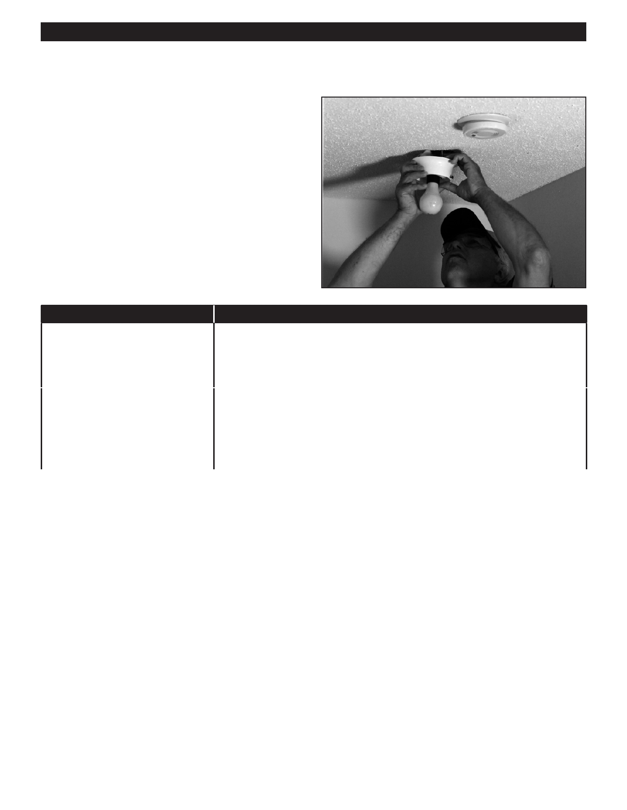

PA RT I C I PA N T R E S O U R C E G U I D E
Removing an Incandescent Fixture (Continued)
How-to Steps
1. Turn off the power to the circuit. Then follow the steps to
Lockout/Tagout the circuit.
2. Remove any shade or globe. Light bulb may also be
removed.
3. Unscrew the light fixture from the electrical box and—
without touching any wires—gently pull away from ceiling
or wall.
4. Use a circuit tester or multimeter to see if the power has
been turned off.
If You Use…
Then Follow These Steps…
A circuit tester
1. Touch one probe of the tester to the green ground screw.
2. Touch the other probe to each screw terminal.
3. Make sure the tester does not light. If it does, there is still power entering the
box.
A multimeter
1. Set the meter to AC volts.
2. Touch one probe of the meter to the green ground screw.
3. Touch the other probe to each screw terminal.
4. Make sure the meter shows 0 to 2 volts. If the number is higher, there is still
power entering the box.
5. Disconnect the light fixture base by loosening the screw terminals.
Notes:
59